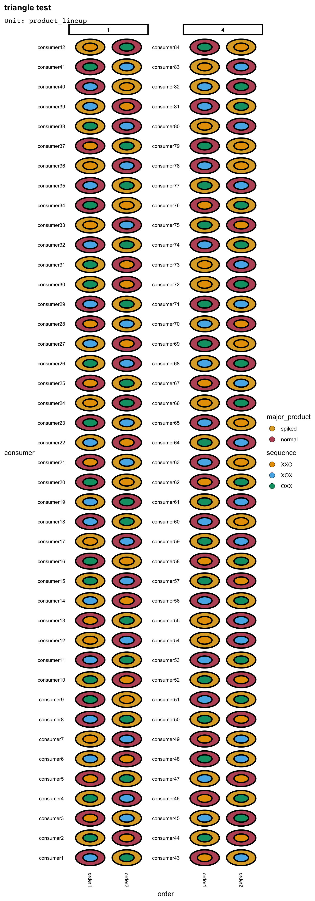
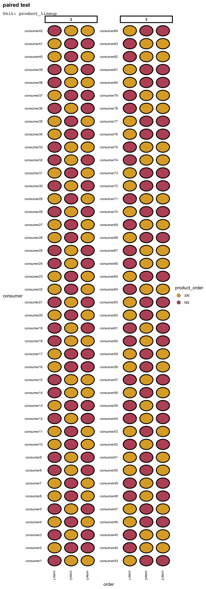
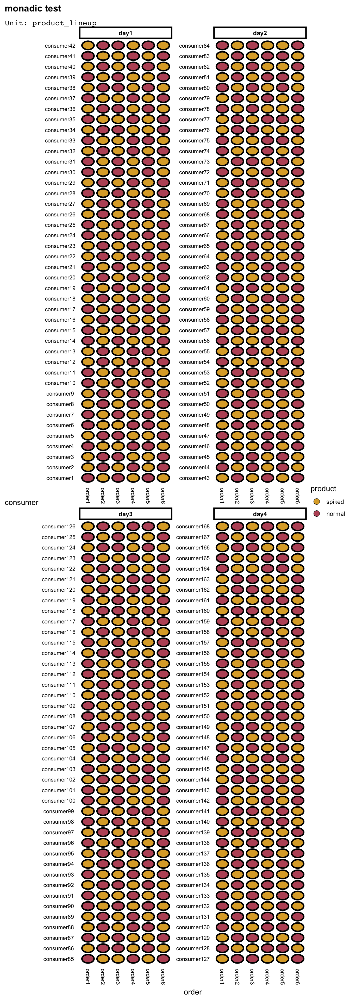

library(tidyverse)
library(edibble)edibble experimental design with sensory discrimination tests
R
experimental design
edibble
Can Australians distinguish the true taste of Vegemite? Designing an experiment with sensory discrimination test using the edibble package.
This blog post attempts to describe the experimental design in Williams et al. (2021) for sensory discrimination test on vegemite using the edibble R package. Detailed descriptions are provided in Williams et al. (2021) and I only provide an abridged version in this blog, except where quoted.
First, I load the packages needed. The edibble package is currently only available on GitHub at https://github.com/emitanaka/edibble with plans to submit to CRAN in the next couple of months.
There are three types of sensory discrimination tests that are used by sensory scientists Drs Ciarán Forde and Patrick O’Riordan in an experiment to see if a story about an alternative to vegemite could sharpen the taste buds and improve the discriminative abilities of Australian consumers. The three sensory discrimination tests are as described below in Williams et al. (2021):
- Triangle test. The consumer is presented with two samples of one product and one sample of the other and asked to pick the odd sample.
- Paired preference test. The consumer is presented with a sample of the standard product and the alternative and asked ‘which sample do you prefer?’
- Monadic ‘A not A’ test. Samples of the standard and alternative products are presented to the consumers in a sequential monadic order (one by one) and they are asked ‘is this your normal product?’
These test are abbreviated as T, PP, and M, respectively. The experimental structure is briefly summarised below:
- there are two versions of vegemite: normal (N) or spiked (S)
- there are 168 consumers in total
- half of the consumers tasted three pairs in the paired preference test and the other half tested two triplets in the triangle test
- all consumers had six samples in the monadic test
- experiment is conducted over 4 days
- each consumer taste no more than 12 samples of vegemite
- logistics allow only 42 consumers per day
- cover story (or lack there of) is shown based on the day
- the broad structure of the experiment is shown in Table @ref(tab:table1)
| Day | 1 | 2 | 3 | 4 |
|---|---|---|---|---|
| Cover story | no | no | yes | yes |
| Test | T, M | PP, M | T, M | PP, M |
| Consumer | 1-42 | 43-84 | 85-126 | 127-168 |
The following is the experimental design description in Williams et al. (2021):
Within this structure a number of design features were introduced:
- Test order. On each day half of the consumers took the sequence of monadic tests first and the other half after either the paired preference or triangle tests.
- For the triangle test there are six possible triplets involving the two products (labelled N and S for normal and spiked vegemite respectively), namely: NNS, SNN, NSN, SSN, NSS and SNS. Two of these triplets were presented in sequence to each consumer and so an optimal row–column design was constructed for six treatments (triplets) in two rows (order of presentation) and 42 columns (consumers). The design generation package CycDesigN (http://www.vsni.co.uk/software/cycdesign/) was used to construct the layout. Furthermore the grouping option of the package was employed to ensure that each consumer sampled each product three times, that is, if the consumer received a triplet with two of the normal vegemite then the second triplet would contain two of the spiked vegemite. Separate randomisations of the design were used for 2 days.
- For the paired preference test the normal vegemite in a pair can be presented either first or second. Hence an optimal row–column design was constructed for two treatments (pair order) in three rows (order of presentation) and 42 columns (consumers). Separate randomisations of the design were used for 2 days.
- For the monadic test the six samples, three of each product (normal and spiked), were presented in a different sequential order to each consumer and so there was the chance to study the possibility of carryover effects from successive samples. CycDesigN was used to construct an optimal crossover design for two treatments (product type) in six periods (order of presentation) and 42 subjects (consumers). Separate randomisations of the design were used for 4 days.
Test order
On each day half of the consumers took the sequence of monadic tests first and the other half after either the paired preference or triangle tests.
Recall:
- experiment is conducted over 4 days
- logistics allow only 42 consumers per day
- cover story (or lack there of) is shown based on the day
At first I couldn’t tell whether the cover story and the sensory tests (T and PP) were randomised or in systematic order, but in my communication with Emlyn Williams, he let me know it was randomised.
set.seed(1)
des1 <- design("sensory evalution") %>%
set_units(day = 4,
consumer = nested_in(day, 42)) %>%
set_trts(cover_story = c("yes", "no"),
test = c("T,M", "PP,M"),
test_first = c("T/PP", "M")) %>%
allot_table(test:cover_story ~ day,
test_first ~ consumer)
des1# sensory evalution
# An edibble: 168 x 5
day consumer cover_story test test_first
<unit(4)> <unit(168)> <trt(2)> <trt(2)> <trt(2)>
1 day1 consumer1 yes T,M T/PP
2 day1 consumer2 yes T,M M
3 day1 consumer3 yes T,M T/PP
4 day1 consumer4 yes T,M T/PP
5 day1 consumer5 yes T,M T/PP
6 day1 consumer6 yes T,M M
7 day1 consumer7 yes T,M T/PP
8 day1 consumer8 yes T,M M
9 day1 consumer9 yes T,M M
10 day1 consumer10 yes T,M M
# … with 158 more rows
# ℹ Use `print(n = ...)` to see more rowsYou can check the allocation of the cover story and test by nesting it by day:
des1 %>%
nest_by(day, cover_story, test)# A tibble: 4 × 4
# Rowwise: day, cover_story, test
day cover_story test data
<unit(4)> <trt(2)> <trt(2)> <list<tibble[,2]>>
1 day1 yes T,M [42 × 2]
2 day2 no PP,M [42 × 2]
3 day3 yes PP,M [42 × 2]
4 day4 no T,M [42 × 2]Triangle test
For the triangle test there are six possible triplets involving the two products (labelled N and S for normal and spiked vegemite respectively), namely: NNS, SNN, NSN, SSN, NSS and SNS. Two of these triplets were presented in sequence to each consumer and so an optimal row–column design was constructed for six treatments (triplets) in two rows (order of presentation) and 42 columns (consumers)… if the consumer received a triplet with two of the normal vegemite then the second triplet would contain two of the spiked vegemite. Separate randomisations of the design were used for 2 days.
Recall:
- each consumer taste no more than 12 samples of vegemite
- logistics allow only 42 consumers per day
As every consumer also does the monadic test which uses 6 samples, only 6 samples remain for the triangle test. The product lineups took me a while to figure it out – the part that tripped me up was that the two lineups (out of NNS, SNN, NSN, SSN, NSS and SNS) that was presented to the consumer sequentially had to have the major product swapped, so you can’t choose something like NNS and NSN because both lineups have the major product as N. This precludes from just two random selections from NNS, SNN, NSN, SSN, NSS and SNS, and requires a conditional randomisation.
I decided to think of this as a two step process:
- choose the main product, and
- choose out of the sequences XXO, XOX and OXX where X denotes the major product.
Since the product lineup is nested within the consumer, the major product allocation in edibble below automatically treats consumer as a block and in the assignment, it will try to ensure the major product is different in the two lineups for each consumer.
des2 <- design("triangle test") %>%
set_units(day = c(1, 4),
consumer = nested_in(day, 42),
product_lineup = nested_in(consumer, 2)) %>%
set_trts(major_product = c("spiked", "normal"),
sequence = c("XXO", "XOX", "OXX")) %>%
allot_table(major_product ~ product_lineup,
sequence ~ product_lineup)
des2# triangle test
# An edibble: 168 x 5
day consumer product_lineup major_product sequence
<unit(2)> <unit(84)> <unit(168)> <trt(2)> <trt(3)>
1 1 consumer1 product_lineup1 normal XOX
2 1 consumer1 product_lineup2 spiked OXX
3 1 consumer2 product_lineup3 normal XOX
4 1 consumer2 product_lineup4 spiked OXX
5 1 consumer3 product_lineup5 normal XXO
6 1 consumer3 product_lineup6 spiked XOX
7 1 consumer4 product_lineup7 spiked XXO
8 1 consumer4 product_lineup8 normal XOX
9 1 consumer5 product_lineup9 normal OXX
10 1 consumer5 product_lineup10 spiked XOX
# … with 158 more rows
# ℹ Use `print(n = ...)` to see more rowsI could alternatively design the above as a row-column design.
des2alt <- design("triangle test") %>%
set_units(day = c(1, 4),
consumer = nested_in(day, 42),
order = 2,
product_lineup = crossed_by(consumer, order)) %>%
set_trts(major_product = c("spiked", "normal"),
sequence = c("XXO", "XOX", "OXX")) %>%
allot_table(major_product ~ product_lineup,
sequence ~ product_lineup)
deggust::autoplot(des2alt)
Paired test
For the paired preference test the normal vegemite in a pair can be presented either first or second. Hence an optimal row–column design was constructed for two treatments (pair order) in three rows (order of presentation) and 42 columns (consumers). Separate randomisations of the design were used for 2 days.
des3 <- design("paired test") %>%
set_units(day = c(2, 3),
consumer = nested_in(day, 42),
order = 3,
product_lineup = crossed_by(consumer, order)) %>%
set_trts(product_order = c("SN", "NS")) %>%
allot_table(product_order ~ product_lineup)
deggust::autoplot(des3)
Monadic test
For the monadic test the six samples, three of each product (normal and spiked), were presented in a different sequential order to each consumer and so there was the chance to study the possibility of carryover effects from successive samples.
des4 <- design("monadic test") %>%
set_units(day = 4,
consumer = nested_in(day, 42),
order = 6,
product_lineup = crossed_by(consumer, order)) %>%
set_trts(product = c("spiked", "normal")) %>%
allot_table(product ~ product_lineup)
options(deggust.nnode_max = Inf)
deggust::autoplot(des4)
Conclusion
So you might be wondering if Australians can indeed distinguish the true taste of vegemite? Well this blog post is not about the analysis but the experimental design. A short analysis is provided, however, in Williams et al. (2021) … and the answer is yes Australians knows their vegemite 😉
Acknowldegement
I want to thank Emyln for being so prompt in answering my questions about this experiment and providing the data (which I didn’t end up using in this blog post), that was mistakenly missing in the initial publication but available now on the website.
References
Williams, E R, C G Forde, J Imaki, and K Oelkers. 2021. “Experimental Design in Practice: The Importance of Blocking and Treatment Structures.” Australian & New Zealand Journal of Statistics 63 (3): 455–67. https://doi.org/10.1111/anzs.12343.